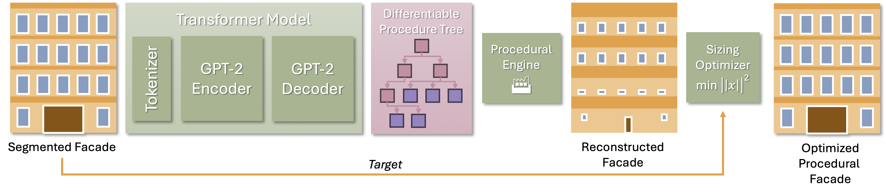

Grammar
Using nerfies you can create fun visual effects. This Dolly zoom effect would be impossible without nerfies since it would require going through a wall.
We introduce a neuro-symbolic transformer-based model that converts flat, segmented facade structures into procedural definitions using a custom designed split grammar.
To facilitate this, we first develop a semi-complex split grammar tailored for architectural facades and then generate a dataset comprising of facades alongside their corresponding procedural representations. This dataset is used to train our transformer model to convert segmented, flat facades into the procedural language of our grammar. During inference, the model applies this learned transformation to new facade segmentations, providing a procedural representation that users can adjust to generate varied facade designs.
This method not only automates the conversion of static facade images into dynamic, editable procedural formats but also enhances the design flexibility, allowing for easy modifications and variations by architects and designers. Our approach sets a new standard in facade design by combining the precision of procedural generation with the adaptability of neuro-symbolic learning.Using nerfies you can create fun visual effects. This Dolly zoom effect would be impossible without nerfies since it would require going through a wall.
As a byproduct of our method, we can also solve the matting problem by ignoring samples that fall outside of a bounding box during rendering.
We can also animate the scene by interpolating the deformation latent codes of two input frames. Use the slider here to linearly interpolate between the left frame and the right frame.

Start Frame

End Frame
Using Nerfies, you can re-render a video from a novel viewpoint such as a stabilized camera by playing back the training deformations.
There's a lot of excellent work that was introduced around the same time as ours.
Progressive Encoding for Neural Optimization introduces an idea similar to our windowed position encoding for coarse-to-fine optimization.
D-NeRF and NR-NeRF both use deformation fields to model non-rigid scenes.
Some works model videos with a NeRF by directly modulating the density, such as Video-NeRF, NSFF, and DyNeRF
There are probably many more by the time you are reading this. Check out Frank Dellart's survey on recent NeRF papers, and Yen-Chen Lin's curated list of NeRF papers.

@article{park2021nerfies,
author = {Park, Keunhong and Sinha, Utkarsh and Barron, Jonathan T. and Bouaziz, Sofien and Goldman, Dan B. and Seitz, Steven M. and Martin-Brualla, Ricardo},
title = {Nerfies: Deformable Neural Radiance Fields},
journal = {ICCV},
year = {2021},
}